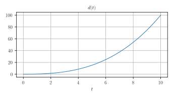
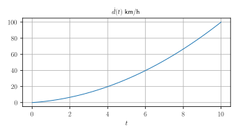
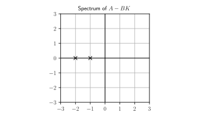
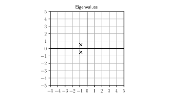
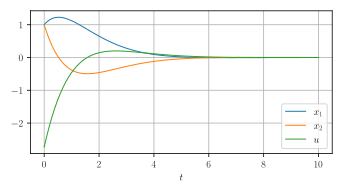
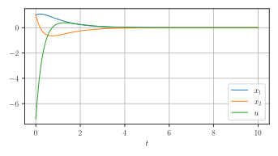
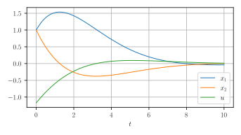

Controllers
Sébastien Boisgérault, Mines ParisTech
Preamble
from numpy import *
from numpy.linalg import *
from numpy.testing import *
from matplotlib.pyplot import *
from scipy.integrate import *Controllability
Definition
The system \(\dot{x} = f(x,u)\) is controllable if
for any \(t_0 \in \mathbb{R}\), \(x_0 \in \mathbb{R}^n\) and \(x_f \in \mathbb{R}^n\),
there are \(t_f > 0\) and \(u: [t_0, t_f] \to \mathbb{R}^m\) such that
the solution \(x(t)\) such that \(x(t_0)=x_0\) satisfies
\[ x(t_f) = x_f. \]
Controllability / Car
The position \(x\) (in meters) of a car of mass \(m\) (in kg) on a straight road is governed by
\[ m \ddot{x} = u \]
where \(u\) the force (in Newtons) generated by its motor.
The car is initially at the origin of a road and motionless. We would like to drive it to across the location \(x_f > 0\) at speed \(v_f\) and at time \(t_f > 0\).
Numerical values:
\(m=1500 \, \mbox{kg}\),
\(t_f=10 \, \mbox{s}\), \(x_f=100 \, \mbox{m}\) and \(v_f=100 \, \mbox{km/h}\).
Strategy
Step 1 – Trajectory Planning
We search for a reference trajectory for the state
\[X_r(t) = (x_r(t), \dot{x}_r(t))\]
such that:
\(x_r(0)=0\), \(\dot{x}_r(0) = 0\),
\(x_r(t_f) = x_f\), \(\dot{x}_r(t_f) = v_f\).
Step 2 – Admissibility
We check that this reference trajectory is admissible, i.e. that we can find a control \(u_r(t)\) such that the solution of the IVP is \(X(t) = X_r(t)\) when \(X(0) = X_r(t)\).
Admissible Trajectory
Here, if \(x_r\) is smooth and if we apply the control \(u(t) = m\ddot{x}_r(t)\),
\[ m \frac{d^2}{dt^2} (x-x_r) = 0, \] \[ (x-x_r)(0) = 0, \; \frac{d}{dt} (x-x_r)(0)= 0. \]
Thus, \(x(t) = x_r(t)\) – and thus \(\dot{x}(t) = \dot{x}_r(t)\) – for every \(t\geq 0\).
Reference Trajectory
We can find \(x_r\) as a third-order polynomial in \(t\)
\[ x_r(t) = a t^3 + b t^2 + c t + d \]
with
\[ a = \frac{v_f}{t_f^2}- 2\frac{x_f}{t_f^3}, \; b = 3\frac{x_f}{t_f^2} - \frac{v_f}{tf},\; c=0, \; d=0. \]
(equivalently, with \(u(t)\) as an affine function of \(t\)).
m = 1500.0
xf = 100.0
vf = 100.0 * 1000 / 3600 # m/s
tf = 10.0
a = vf/tf**2 - 2*xf/tf**3
b = 3*xf/tf**2 - vf/tfdef x(t):
return a * t**3 + b * t**2
def d2_x(t):
return 6 * a * t + 2 * b
def u(t):
return m * d2_x(t)y0 = [0.0, 0.0]
def fun(t, y):
x, d_x = y
d2_x = u(t) / m
return [d_x, d2_x]
result = solve_ivp(fun, [0.0, tf], y0, dense_output=True)figure()
t = linspace(0, tf, 1000)
xt = result["sol"](t)[0]
plot(t, xt)
grid(True); xlabel("$t$"); title("$x(t)$")
figure()
vt = result["sol"](t)[1]
plot(t, 3.6 * vt)
grid(True); xlabel("$t$")
title(r"$\dot{x}(t) \, \mbox{[km/h]}$")
Non-admissible trajectory
Let \[ \dot{x} = A x \; \mbox{ with } \; x\in \mathbb{R}^2, \; A = \left[ \begin{array}{cc} 0 & 1 \\ 0 & 0 \end{array} \right]. \]
Find a smooth reference trajectory \[x_r(t), \,t\in[0, 1]\] which is not admissible.
Pendulum
Consider the pendulum with dynamics:
\[ m \ell^2 \ddot{\theta} + b \dot{\theta} + mg \ell \sin \theta = u \]
[, ] Find a smooth reference trajectory that leads the pendulum from \(\theta(0)=0\) and \(\dot{\theta}(0) = 0\) to \(\theta(t_f) = \pi\) and \(\dot{\theta}(t_f) = 0\).
[, ] Show that the reference trajectory is admissible and compute the corresponding input \(u(t)\) as a function of \(t\) and \(\theta(t)\).
[, ] Simulate the result with standard and high-precision (small steps). What should happen theoretically after \(t=t_f\) if \(u(t)=0\) is applied ? What does happen in practice ?
Numerical Values:
\[ m = 1.0, \, l = 1.0, \, b = 0.1,\, g = 9.81, \, t_f = 10. \]
Controllability / LTI system
For a LTI system, it is sufficient to check that
from the origin \(x_0 = 0\) at \(t_0=0\),
we can reach any state \(x_f \in \mathbb{R}^n\).
Kalman Criterion
The system \(\dot{x} = Ax+Bu\) is controllable iff:
\[ \mathrm{rank} \, \left[B, AB, \dots, A^{n-1} B\right] = n \]
\([B, \dots, A^{n-1}B]\) is the Kalman controllability matrix.
Kalman controllability matrix
\[ A = \left[ \begin{array}{ccc} 0 & 1 & 0 \\ 0 & 0 & 1 \\ 0 & 0 & 0 \end{array} \right], \; B = \left[ \begin{array}{c} 0 \\ 0 \\ 1 \end{array} \right] \]
Computation
def KCM(A, B):
n = shape(A)[0]
mp = matrix_power
cs = column_stack
return cs([mp(A, k) @ B for k in range(n)])n = 3
A = zeros((n, n))
for i in range(0, n-1):
A[i,i+1] = 1.0
B = zeros((n, 1))
B[n-1, 0] = 1.0C = KCM(A, B)
C_expected = [[0, 0, 1], [0, 1, 0], [1, 0, 0]]
assert_almost_equal(C, C_expected)Fully Actuated System
Consider \(\dot{x} = A x + Bu\) with \(x \in \mathbb{R}^n\), \(u \in\mathbb{R}^n\) and \(\mathrm{rank} \, B = n\).
[, ] Is the systems controllable ?
[, ] Given \(x_0\), \(x_f\) and \(t_f > 0\), show that any smooth trajectory that leads from \(x_0\) to \(x_f\) in \(t_f\) seconds is admissible.
Integrator Chain
\[\dot{x}_n = u, \, \dot{x}_{n-1} = x_n, \, \cdots \,, \dot{x}_1 = x_2.\]
- [, ] Show that the system is controllable
Heat Equation

\(d T_1/dt = u + (T_2 - T_1)\)
\(d T_2/dt = (T_1 - T_2) + (T_3 - T_2)\)
\(d T_3/dt = (T_2 - T_3) + (T_4 - T_3)\)
\(d T_4/dt = (T_3 - T_4)\)
[, ] Show that the system is controllable.
[, ] Is it still true if the four cells are organized as a square and the heat sink/source is in any of the corners ? How many independent sources do you need to make the system controllable and where can you place them?
Extra Exercices
Unreachable states
Brunovsky form
Controllability in prey-predator systems (via the invariant)
etc.
Asymptotic Stabilization
Stabilization
When the system
\[ \dot{x} = A x, \; x \in \mathbb{R}^n \]
is not asymptotically stable at the origin,
maybe there are some inputs \(u \in \mathbb{R}^m\) such that
\[ \dot{x} = A x + Bu \]
that we can use to stabilize asymptotically the system?
Linear Feedback
We can try to compute \(u\) as
\[ u(t) = -K x(t) \]
fro some \(K \in \mathbb{R}^{m \times n}\)
Note. This strategy requires the system state \(x(t)\) to be known (measured); this information is then fed back into the system.
Closed-Loop Diagram
Closed-Loop Dynamics
When
\[ \begin{array}{ccc} \dot{x} = Ax + B u \\ u = - K x \end{array} \]
the state \(x \in \mathbb{R}^n\) evolves according to:
\[ \dot{x} = (A - B K) x \]
The closed-loop system is asymptotically stable iff every eigenvalue of the matrix
\[ A - B K \]
is in the open left-hand plane.
Pole Assignment
Assume that:
The systems \(\dot{x} = A x + Bu\) is controllable.
Let \(\Lambda = \{\lambda_1, \dots, \lambda_n\} \in \mathbb{C}^n\) be a (multi-)set of complex numbers (a value may appear several times) which is symmetric:
if \(\lambda \in \Lambda\), then \(\overline{\lambda} \in \Lambda\) (with the same multiplicity)
Let \(\sigma(A - BK)\) denote the (multi-)set of eigenvalues of \(A - B K\) (eigenvalues are counted with their multiplicity).
Then there is a matrix \(K\) such that
\[ \sigma(A - B K) = \Lambda. \]
Stabilization/Pole Assignment
Consider the double integrator \(\ddot{x} = u\)
\[ \frac{d}{dt} \left[\begin{array}{c} x \\ \dot{x} \end{array}\right] = \left[\begin{array}{cx} 0 & 1 \\ 0 & 0\end{array}\right] \left[\begin{array}{c} x \\ \dot{x} \end{array}\right] + \left[\begin{array}{c} 0 \\ 1 \end{array}\right] u \]
(in standard form)
from scipy.signal import place_poles
A = array([[0, 1], [0, 0]])
B = array([[0], [1]])
poles = [-1, -2]
K = place_poles(A, B, poles).gain_matrixassert_almost_equal(K, [[2.0, 3.0]])
eigenvalues, _ = eig(A - B @ K)
assert_almost_equal(eigenvalues, [-1, -2])figure()
x = [real(s) for s in eigenvalues]
y = [imag(s) for s in eigenvalues]
plot(x, y, "kx", ms=12.0)
xticks([-3, -2,-1, 0,1, 2,3])
yticks([-3, -2,-1, 0,1, 2,3])
plot([0, 0], [-3, 3], "k")
plot([-3, 3], [0, 0], "k")
title("Eigenvalues")
grid(True)
Implementation detail
The
place_polesfunction will not accept eigenvalues whose multiplicity is higher than the rank of \(B\).So here
poles = [-1, -1]won’t work.But
poles = [-1, -1.001]may work.
Pole Assignment / Default
Consider system with dynamics
\[ \begin{array}{ccr} \dot{x}_1 &=& x_1 - x_2 + u \\ \dot{x}_2 &=& - x_1 + x_2 + u \end{array} \]
[,]. We apply the control law \[u = -k_1 x_1 - k_2 x_2;\] can we move the poles of the system where we want by a suitable choice of \(k_1\) and \(k_2\)?
[] Explain this result.
Pendulum
Consider the pendulum with dynamics:
\[ m \ell^2 \ddot{\theta} + b \dot{\theta} + mg \ell \sin \theta = u \]
- [, ] Compute the linearized dynamics of the system around the equilibrium \(\theta=\pi\) and \(\dot{\theta} = 0\).
[, ] Design a control law \[ u = -k_{1} (\theta - \pi) - k_{2} \dot{\theta} \] such that the closed-loop linear system is asymptotically stable, with a time constant smaller than \(10\) sec.
Numerical Values:
\[ m = 1.0, \, l = 1.0, \, b = 0.1,\, g = 9.81 \]
- [, ] Simulate this control law on the nonlinear systems when \(\theta(0) = 0\) and \(\dot{\theta}(0) = 0\); compare with the open-loop strategy that we have already considered.
Double Spring System
Consider the dynamics:
\[ \begin{array}{rcl} m_1 \ddot{x}_1 & = & -k_1 x_1 - k_2 (x_1 - x_2) - b_1 \dot{x}_1 \\ m_2 \ddot{x}_2 & = & -k_2 (x_2 - x_1) - b_2 \dot{x}_2 + u \end{array} \]
Numerical values: \[ m_1 = m_2 = 1, \; k_1 = 1, k_2 = 100, \; b_1 = 0, \; b_2 = 20 \]
[, ] Compute the poles of the system. Is it asymptotically stable?
[, ] Use a linear feedback to kill the oscillatory behavior of the solutions and “speed up” the eigenvalues associated to a slow behavior.
Optimal Control
Why ?
Limitations of Pole Assignment
it is not always obvious what set of poles we should target (especially for large systems),
we do not control explicitly the trade-off between “speed of convergence” and “intensity of the control” (large input values maybe costly or impossible).
Let
\[\dot{x} = A x + Bu\]
where
\(A \in \mathbb{R}^{n\times n}\), \(B \in \mathbb{R}^{m\times n}\) and
\(x(0) = x_0 \in \mathbb{R}^n\) is given.
Find \(u(t)\) that minimizes
\[ J = \int_0^{+\infty} x(t)^t Q x(t) + u(t)^t R u(t) \, dt \]
where:
\(Q \in \mathbb{R}^{n \times n}\) and \(R \in \mathbb{R}^{m\times m}\),
(to be continued …)
\(Q\) and \(R\) are symmetric (\(R^t = R\) and \(Q^t = Q\)),
\(Q\) and \(R\) are positive definite (denoted “\(>0\)”)
\[x^t Q x \geq 0 \, \mbox{ and } \, x^t Q x = 0 \, \mbox{ iff }\, x=0\]
and
\[u^t R u \geq 0 \, \mbox{ and } \, u^t R u = 0 \, \mbox{ iff }\, u=0.\]
Heuristics / Scalar Case
If \(x \in \mathbb{R}\) and \(u \in \mathbb{R}\),
\[ J = \int_0^{+\infty} q x(t)^2 + r u(t)^2 \, dt \]
with \(q > 0\) and \(r > 0\).
When we minimize \(J\):
Only the relative values of \(q\) and \(r\) matters.
Large values of \(q\) penalize strongly non-zero states:
\(\Rightarrow\) fast convergence.
Large values of \(r\) penalize strongly non-zero inputs:
\(\Rightarrow\) small input values.
Heuristics / Vector Case
If \(x \in \mathbb{R}^n\) and \(u \in \mathbb{R}^m\) and \(Q\) and \(R\) are diagonal,
\[ Q = \mathrm{diag}(q_1, \cdots, q_n), \; R=\mathrm{diag}(r_1, \cdots, r_m), \]
\[ J = \int_0^{+\infty} \sum_{i} q_i x_i(t)^2 + \sum_j r_j u_j(t)^2 \, dt \]
with \(q_i > 0\) and \(r_j > 0\).
Thus we can control the cost of each component of \(x\) and \(u\) independently.
Optimal Solution
Assume that \(\dot{x} = A x + Bu\) is controllable.
There is an optimal solution; it is a linear feedback
\[u = - K x\]
The corresponding closed-loop dynamics is asymptotically stable.
Algebraic Riccati Equation
The gain matrix \(K\) is given by
\[ K = R^{-1} B^t \Pi, \]
where \(\Pi \in \mathbb{R}^{n \times n}\) is the unique matrix such that \(\Pi^t = \Pi\), \(\Pi > 0\) and
\[ \Pi B R^{-1} B^t \Pi - \Pi A - A^t \Pi - Q = 0. \]
Value of \(J\)
Consider the dynamics \(\dot{x} = A x + Bu\) where \(u=-Kx\) is the optimal control associated to
\[ J = \int_{0}^{+\infty} j(x(t), u(t)) \, dt \]
where
\[ j(x, u) = x^t Q x + u^t R u. \]
[, ] Show that \[ j(x(t), u(t)) = - \frac{d}{dt} x(t)^t \Pi x(t) \]
[, ] What is the value of \(J\) in the optimal case?
Stabilization/Optimal Control
Consider the double integrator \(\ddot{x} = u\)
\[ \frac{d}{dt} \left[\begin{array}{c} x \\ \dot{x} \end{array}\right] = \left[\begin{array}{cx} 0 & 1 \\ 0 & 0\end{array}\right] \left[\begin{array}{c} x \\ \dot{x} \end{array}\right] + \left[\begin{array}{c} 0 \\ 1 \end{array}\right] u \]
(in standard form)
from scipy.linalg import solve_continuous_are
A = array([[0, 1], [0, 0]])
B = array([[0], [1]])
Q = array([[1, 0], [0, 1]]); R = array([[1]])
Pi = solve_continuous_are(A, B, Q, R)
K = inv(R) @ B.T @ Pi
eigenvalues, _ = eig(A - B @ K)
assert all([real(s) < 0 for s in eigenvalues])figure()
x = [real(s) for s in eigenvalues]
y = [imag(s) for s in eigenvalues]
plot(x, y, "kx", ms=12.0)
xticks([-2, -1, 0, 1, 2])
yticks([-2, -1, 0, 1, 2])
plot([0, 0], [-2, 2], "k")
plot([-2, 2], [0, 0], "k")
grid(True)
title("Eigenvalues")
y0 = [1.0, 1.0]
def f(t, x):
return (A - B.dot(K)).dot(x)
result = solve_ivp(f, t_span=[0, 10], y0=y0, max_step=0.1)
t = result["t"]
x1 = result["y"][0]
x2 = result["y"][1]
u = -K.dot(result["y"]).flatten()figure()
plot(t, x1, "k-", label="$x_1$")
plot(t, x2, "k--", label="$x_2$")
plot(t, u, "k:", label="$u$")
xlabel("$t$")
legend()
Q = array([[10, 0], [0, 10]]); R = array([[1]])
Pi = solve_continuous_are(A, B, Q, R)
K = inv(R) @ B.T @ Piresult = solve_ivp(f, t_span=[0, 10], y0=y0, max_step=0.1)
t = result["t"]
x1 = result["y"][0]
x2 = result["y"][1]
u = -K.dot(result["y"]).flatten()figure()
plot(t, x1, "k-", label="$x_1$")
plot(t, x2, "k--", label="$x_2$")
plot(t, u, "k:", label="$u$")
xlabel("$t$")
legend()
Q = array([[1, 0], [0, 1]]); R = array([[10]])
Pi = solve_continuous_are(A, B, Q, R)
K = inv(R) @ B.T @ Piresult = solve_ivp(f, t_span=[0, 10], y0=y0, max_step=0.1)
t = result["t"]
x1 = result["y"][0]
x2 = result["y"][1]
u = -K.dot(result["y"]).flatten()figure()
plot(t, x1, "k-", label="$x_1$")
plot(t, x2, "k--", label="$x_2$")
plot(t, u, "k:", label="$u$")
xlabel("$t$")
legend()
Extra Exercise
- “Lunar lander” for “rendez-vous” with limited fuel?